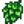
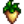
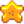
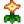
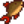
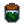
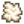
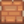
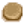

Reisewagen
| Reisewagen | |
 | |
 | |
| Öffnungszeiten: | Freitag/Sonntag 06:00 bis 20:00 Uhr Nachtmarkt: 17:00 bis 02:00 Uhr |
| Ruhetage: | Montag - Donnerstag, Samstag |
| Adresse: | Zundersaftwald |
| Bewohner: | |
Der Reisewagen ist ein Laden, der südlich des Hofs, im Zundersaftwald, an Freitagen und Sonntagen auftaucht. Der Wagen wird von einem Schwein gezogen, das eine Mütze und eine Brille trägt. Wenn du mit dem Schwein interagierst, grunzt es dich an.
Die Händlerin verkauft ein Angebot von verschiedenen Artikeln in limitierter Häufigkeit (1 oder 5 von jedem). Die Artikel können manchmal auch außerhalb ihrer Saison auftreten, was bei der Komplettierung der Bündel hilfreich sein kann.
Die Preise variieren dabei von Besuch zu Besuch. Zudem ist es möglich, dass bei einem Besuch ein Artikel öfter zu verschiedenen Preisen gelistet sein kann. Normalerweise sind die Preise höher als in Pierres Gemischtwarenladen, allerdings kann man auch Artikel finden, die unter dem Normalpreis liegen.
Das Angebot besteht aus 10 Artikeln und einem Stück Mobiliar. Manchmal gibt es auch einen zusätzlichen "Spezialartikel" zu kaufen.
Spezialartikel
Beachte, dass die Kaffeebohne und Seltene Saat auch als Standardartikel in den verschiedenen Jahreszeiten verkauft werden (1.26% Chance zum Auftreten).
| Gegenstand | Stückpreis | Jahreszeit | Hinweise | |
|---|---|---|---|---|
| Seltene Saat | 100% Chance zu erscheinen 10% Chance für 5 Stapel; 90% Chance für 1 Stapel. | |||
| Sammler-Vogelscheuche (4 von 8) | 40% Chance zu erscheinen. | |||
| Kaffeebohne | Alle | 25% Chance zu erscheinen. | ||
| Heiratsring Rezept | Alle | Mehrspieler: 100% Chance zu erscheinen bis er gekauft wurde. Einzelspieler: Erscheint nicht. | ||
Standardvorrat
Nichtaufgeführte Items werden nicht am Reisewagen verkauft. Die Gegenstände, die verkauft werden, sind immer von Standardqualität, niemals Silber-, Gold- oder Iridiumqualität.
Gekochtes Essen
| Gegenstand | Preis |
|---|---|
Nutzpflanzen & sammelbare Gegenstände
| Gegenstand | Preis |
|---|---|
|  Hopfen | |
|  Pastinake | |
|  Sternfrucht | |
|  Sommerschmuck | |
Saat & Dünger
Fisch & Strand-Sammelgegenstände
| Gegenstand | Preis |
|---|---|
|  Skorpionkarpfen | |
Handwerkswaren
| Gegenstand | Preis |
|---|---|
|  Eingelegtes | |
Tierprodukte
| Gegenstand | Preis |
|---|---|
|  Wolle | |
Herstellbare Gegenstände
| Gegenstand | Preis |
|---|---|
|  Ziegelboden | |
|  Trittsteinpfad | |
Ressourcen
| Gegenstand | Preis |
|---|---|
Zapfprodukte
| Gegenstand | Preis |
|---|---|
Köder & Angelzubehör
| Gegenstand | Preis |
|---|---|
Monsterbeute
| Gegenstand | Preis |
|---|---|
Möbel
Jedes unten aufgelistete Möbelstück 0,68% Wahrscheinlichkeit im Standardvorrat des Reisewagens zu erscheinen. Jedes Stück wird zwischen  250–2.500 G sein.
250–2.500 G sein.
Nicht aufgelistete Möbel werden nicht im Reisewagen verkauft.
Stühle, Bänke, & Sofas
Tische
Hauspflanzen
|
|
|
Gemälde & Wandbehänge
Andere Möbelstücke
|
|
|
Bugs
- Auf der Android- und iOS-Version des Spiels können Gegenstände nach dem Kauf unbegrenzt erneut erworben werden, indem das Shop-Menü geschlossen und erneut geöffnet wird.
Geschichte
- 1.0: Eingeführt.
- 1.1: Kaffeebohne zum Kauf verfügbar gemacht.
- 1.3.27: Erscheint nun beim Nachtmarkt.
- 1.4: Doppelte Einträge vom Standardvorrat entfernt. Süße Edelsteinbeere, Schattenei und Schattenmayonnaise vom potentiellen Standardvorrat entfernt. Neue Items zum Standardvorrat hinzugefügt: Ziegelboden, Kaviar, Flunder, Grüner Tee, Mitternachtskarpfen, Reis Sprießen, Meerschaumpudding, Krabbencocktail, Teebäumchen, Dreifacher Espresso, Ungemahlener Reis.
- 1.5: Ozeanischer Teppich zum möglichen Möbelvorrat hinzugefügt.
| Gebäude | ||
|---|---|---|
| Händler | Abenteurergilde • Anglerbedarf • Bruchbude • Buchhändler • Eisstand • Geheimes Walnusszimmer von Mr. Qi • Inselhändler • Joja-Markt • Kasino • Klinik • Kneipe • Marnies Ranch • Oase • Pierres Gemischtwarenladen • Reisewagen • Schmied • Schreinerladen • Turm des Zauberers • Vulkanzwerg • Wüstenhändler | |
| Häuser | Bauernhaus • Baumhaus • Bergstraße 24 • Elliotts Hütte • Flussstraße 1 • Flussstraße 2 • Haus des Bürgermeisters • Insel-Farmhaus • Leahs Hütte • Weidengasse 1 • Weidengasse 2 • Wohnwagen • Zelt | |
| Bauernhof Gebäude | Bauernhof | Brunnen • Fischteich • Gewächshaus • Hühnerstall • Hütte • Mühle • Pferdestall • Schleim-Stall • Schuppen • Silo • Stall |
| Spezial | Erdobelisk • Goldene Uhr • Hof-Obelisk • Insel-Obelisk • Junimo-Hütte • Wasserobelisk • Wüsten Obelisk | |
| andere Gebäude | Gemeinschaftszentrum • Hexenhütte • Hundehütte • Insel-Außenstelle • Joja-Warenhaus • Kanalisation • Kino • Museum • Spa | |